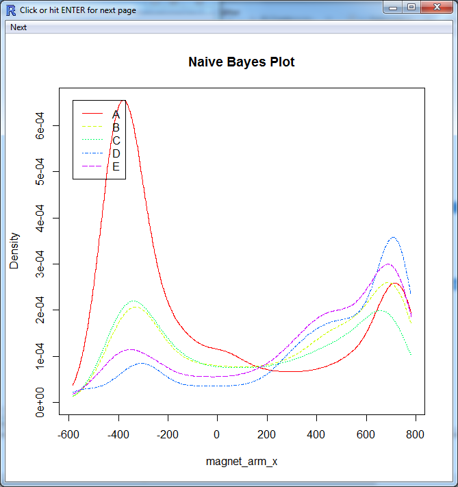
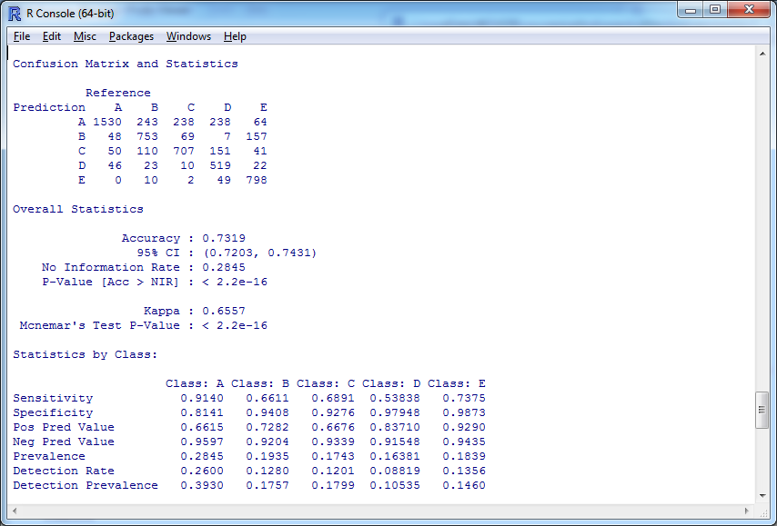
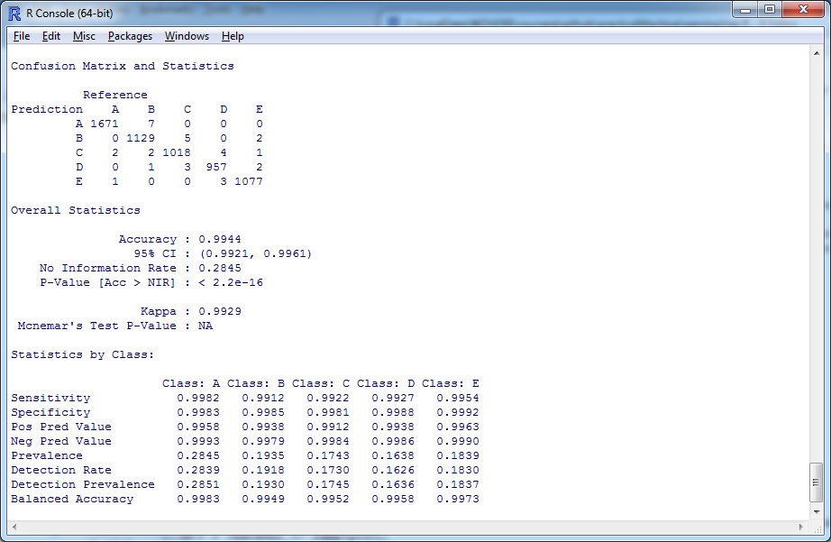

Course project specified on assigment page
was done in data preprocessing, training and testing steps. Naive Bayes and Random Forest models were used.
Data Preprocessing
First read the training dataset from CSV format by:
> training<-read.csv("pml-training.csv")
There are attributes (the first 7) which are not relevant for prediction, live them out
> head(names(training),7)
[1] "X" "user_name" "raw_timestamp_part_1" "raw_timestamp_part_2"
[5] "cvtd_timestamp" "new_window" "num_window"
> tr <- training[,8:159]
All the remaing attributes are the recorded signals coming from the sensors and their statistics, values has to be numeric, conversion needed
> types <- sapply(tr,class)
> f<-function(x) {x<-as.numeric(x)}
> tr[,which(types != "numeric")]<-sapply(tr[,which(types != "numeric")],f)
Attributes with count of missing values (NA) greater than 70% of the cases have not too much information value, they are deleted from training sample
> f<-function(x) { sum(is.na(x)) > length(x) *0.7}
> leaveout <- sapply(tr,f)
> tr <- tr[,-which(leaveout == T)]
Finally the "classe" output attribute is binded and training dataset is split to train and to test (70% - 30%), to have a good idea about out of sample error
> set.seed(1)
> ftr <- cbind(tr,training$classe)
> names(ftr)[86] <- "classe"
> tr_ind<-createDataPartition(ftr$classe,p=0.7,list=F)
> ftr_tr <- ftr[tr_ind,]
> ftr_te <- ftr[-tr_ind,]
For missing value replacing, use median imputation method, trained on train sample, applied to both train and test
> prep <- preProcess(ftr_tr[-86],method="medianImpute")
> ftr_tr <- predict(prep,newdata=ftr_tr)
> ftr_te <- predict(prep,newdata=ftr_te)
Model Training
Based on the assumption that sensors' signals are independent Naive Bayes classification model could be effective and therefore selected for analysis.
Set up trainControl with crossvalidation default 10 folds and classProbs for having the class probailities on the output
> ctrl <- trainControl(method="cv",number=10,returnData = F,returnResamp = "all", classProbs = T)
> set.seed(1)
> library(klaR)
> mod <- train(classe ~ ., data = ftr_tr, method = "nb", trControl = ctrl)
For model understaing all predictor attribute densisities could be viewed with the plot function, E.g. for magnet_arm_x attribute look at the image below.
> plot(mod$finalModel)

Get predicting results on the testing dataset by the confusionMatrix function, accuracy looks good: 0.73, not too far from the publicated results on HAR homepage
> fte_te_resp <- predict(mod,newdata=ftr_te)
> confusionMatrix(ftr_te_resp,ftr_te$classe)

Model Training II.
Random Forest algorithm is checked as well with standard settings:
> set.seed(1)
> mod <- train(classe ~ ., data = ftr_tr, method = "rf")
Get predicting results on the testing dataset by the confusionMatrix function, accuracy much better: 0.9944, statistics shows even better results than publicated.
> fte_te_resp <- predict(mod,newdata=ftr_te)
> confusionMatrix(ftr_te_resp,ftr_te$classe)

Model Testing
For model testing the provided test dataset (20 test cases) has to be read and transformed the same way as training data:
> testing<-read.csv("pml-testing.csv")
Have only the relevant attributes
> te <- testing[,8:159]
Convert non-numeric attributes to numeric
> types <- sapply(te,class)
> f<-function(x) {x<-as.numeric(x)}
> te[,which(types != "numeric")]<-sapply(te[,which(types != "numeric")],f)
Delete the non-used attributes
> te <- te[,-which(leaveout == T)]
Apply median based imputation on missing values
> te2 <- predict(prep,newdata=te)
Predict test cases with type="prob" option to have and understanding on the probability for each output classes
> te_resp <- predict(mod,newdata=te2,type="prob")